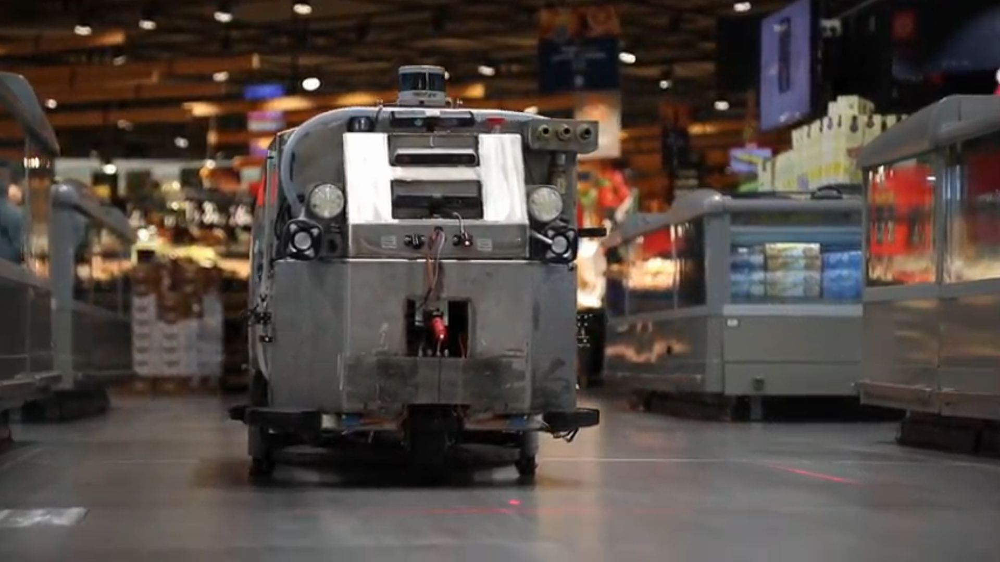
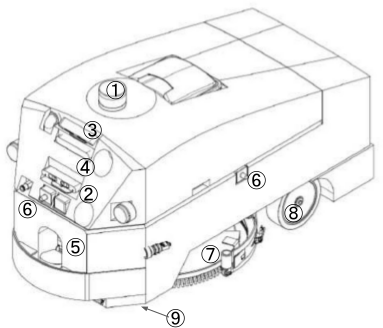

FLOBOT Perception Dataset
Collected by our very own FLOBOT (FLOor washing RObot)

FLOBOT is an advanced autonomous floor scrubber. This dataset was collected with FLOBOT including data of five sensors for environment perception as well as the robot odometry. Data collection was carried out in real environments including airport, hospital, and supermarket. ... blablabla ... For a quick overview, please refer to the following video.
This dataset provides:
If you publish work based on, or using, this dataset, we would appreciate citations to the following:
manuscript in preparation ...
|  |
|
Many new research challenges have been introduced in this dataset, such as ... blablabla ...
 |
 |
 |
 |
| sloping road | shared zone | diversion | roundabout |
somewhere
https://github.com/LCAS/FLOBOT

This work is licensed under a Creative Commons Attribution-NonCommercial-ShareAlike 4.0 International License.
Copyright (c) 2019 Simon Schreiberhuber, Georg Halmetschlager, Markus Vincze, Zhi Yan, Tom Duckett, and Nicola Bellotto..
This work was funded in part by the EU Horizon 2020 project FLOBOT, H2020-ICT-2014-1, Grant agreement no.: 645376.